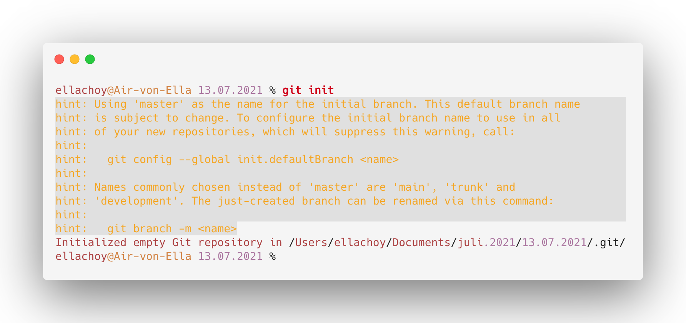
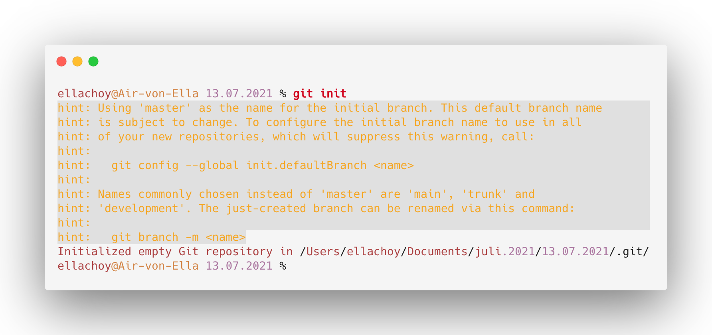
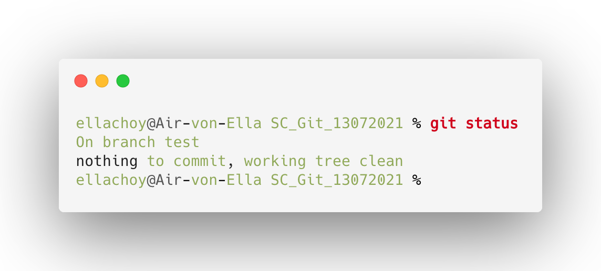
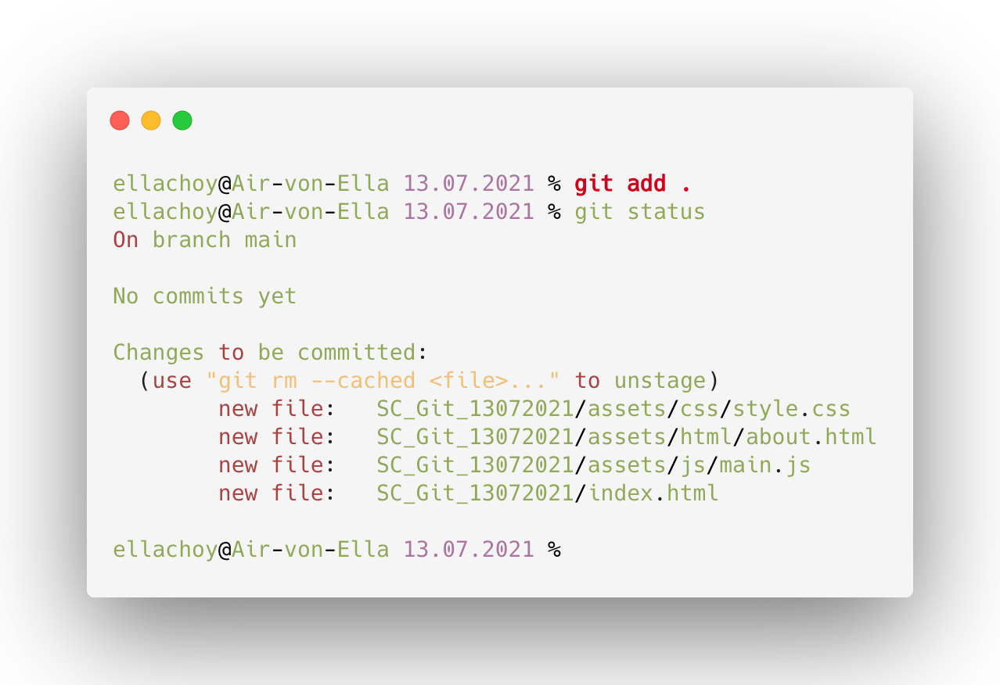
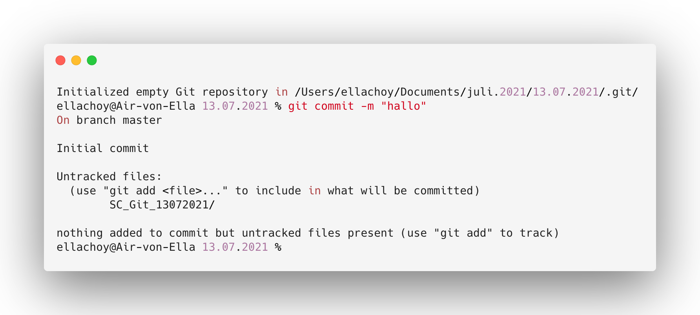
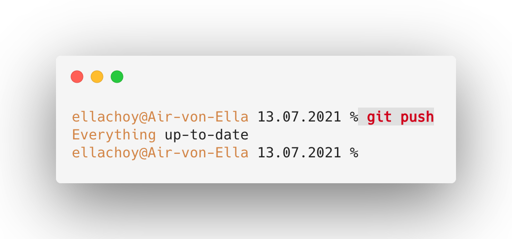
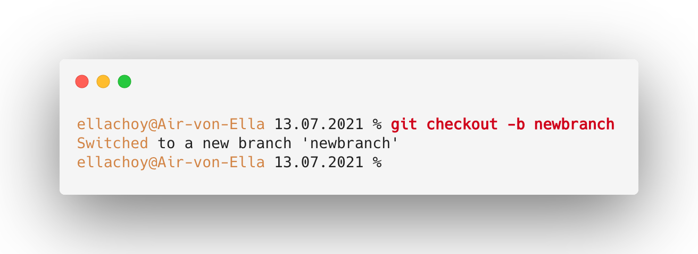

Repositories anlegen: init
: erstelle ein neues Verzeichnis,öffne es und führe mit "init" aus
Point! : git befehl
beispiel: git init
: erstelle ein neues Verzeichnis,öffne es und führe mit "init" aus
Point! : git befehl
beispiel: git init
: check working tree status
Point! : git befehl
beispiel: git status
: Staging-Dateien
Point! : add (leerzeichen) .
beispiel: add .
:bestätige die Änderungen
Point! : commit(leerzeichen) -m "(name) "
beispiel:git commit -m "Commit-Änderung"
: wo befindet sich meine erstellte Ordner/datei?
Point! : git(leerzeichnen)push
beispiel: git push
Zweigstelle erstellen
Point! :erstellen und zum Testen wechseln
beispiel: git checkout -b test
